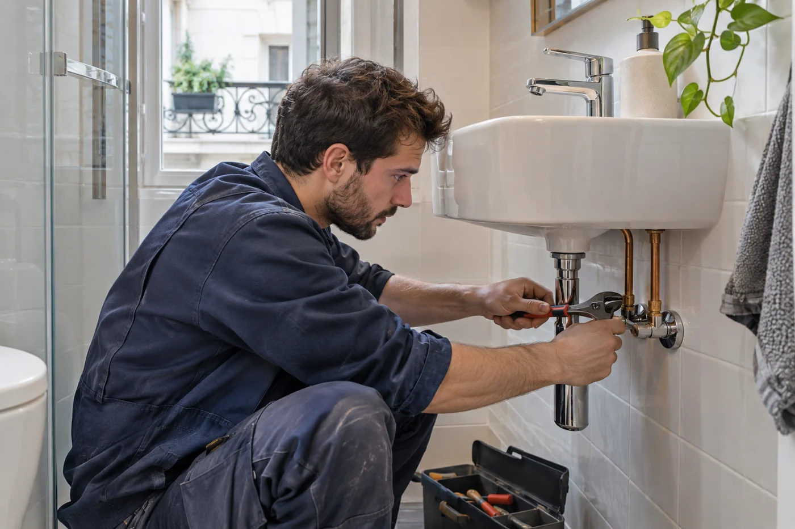
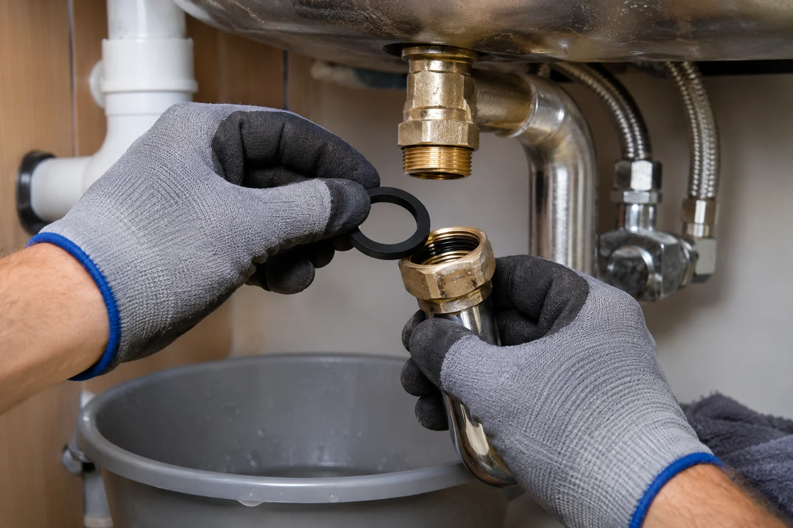
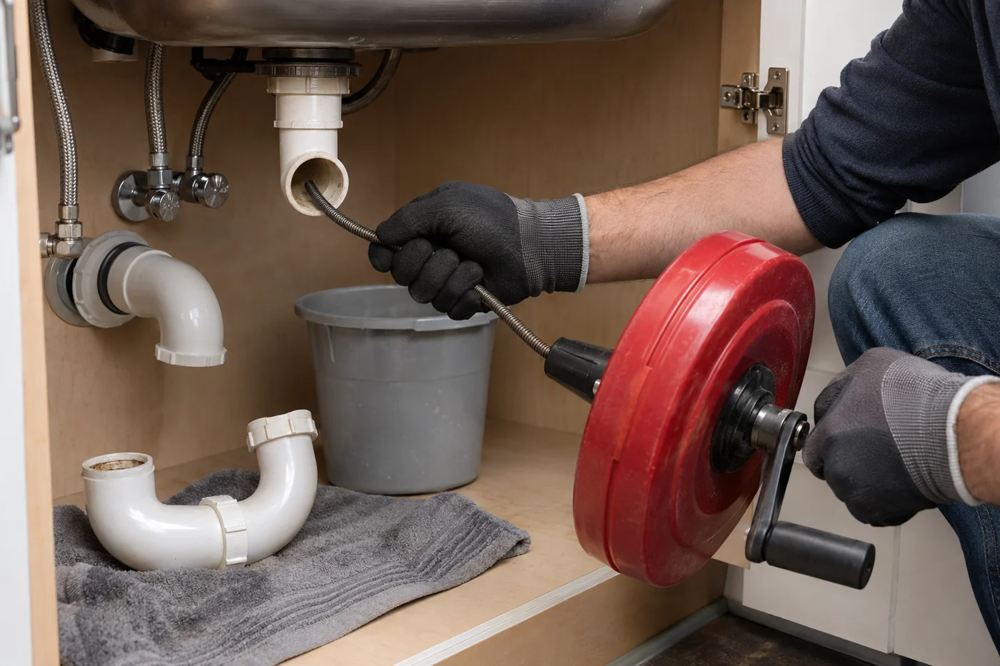

PLOMBERIE · PARIS ET BANLIEUE
Dépannage plomberie à Paris et en banlieue
Nous réparons vos fuites d’eau et intervenons sur vos canalisations bouchées.

Le sens du service.

Visuel d’illustration01 / FUITES D’EAU
Une fuite sous un équipement ?
Une fuite sous un évier, un lavabo ou une baignoire peut provenir des joints, du siphon ou des raccordements. Nous intervenons pour la réparation des fuites d’eau et le remplacement des éléments concernés, selon l’état de votre installation.
- Décrivez l’endroit où l’eau apparaît.
- Précisez si la fuite est continue ou liée à l’utilisation.
- Nous évaluons la réparation ou le remplacement des éléments concernés.

Visuel d’illustration02 / ÉVACUATIONS
Retrouver une évacuation fonctionnelle.
Un évier bouché, un lavabo qui se vide lentement ou un WC bouché mérite une intervention adaptée à l’évacuation concernée. Nous assurons le débouchage et le dégorgement des canalisations, ainsi que le détartrage des tuyauteries selon leur état et leur configuration.
- Débouchage et dégorgement des tuyauteries.
- Détartrage selon l’état et la configuration de l’installation.
- Réparation ou remplacement des éléments de plomberie concernés.
VOS QUESTIONS
Avant de nous contacter.
Quelles informations préparer ?+
Indiquez votre localisation, l’équipement concerné, les signes observés et depuis quand le problème se manifeste.
Comment organiser une intervention ?+
Appelez-nous pour décrire votre besoin. Nous échangeons sur la situation et organisons la suite selon les disponibilités, sans délai garanti.
Le problème concerne aussi un robinet ou un WC ?+
Nous intervenons également sur la robinetterie et les sanitaires. Consultez la page dédiée pour les équipements concernés. Voir la robinetterie et les sanitaires.
PARLONS DE VOTRE BESOIN
Un projet, une fuite,
une question ?
Nous prenons le temps d’échanger sur votre situation.